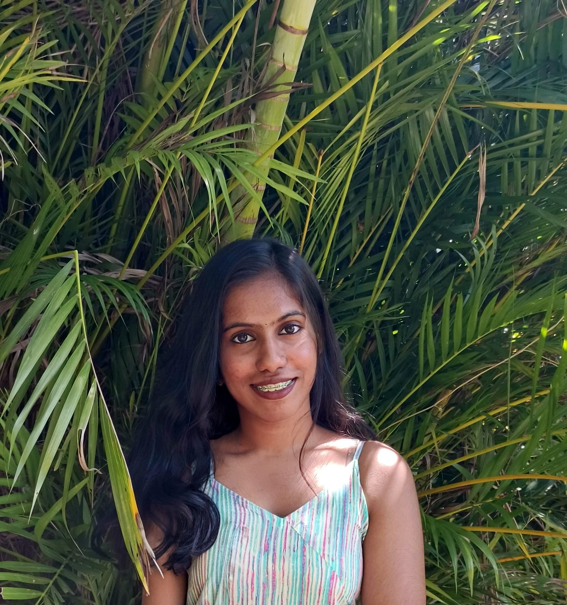
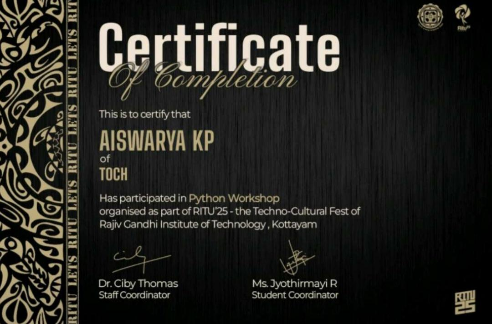
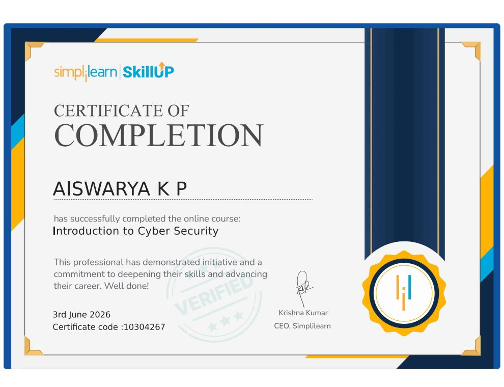
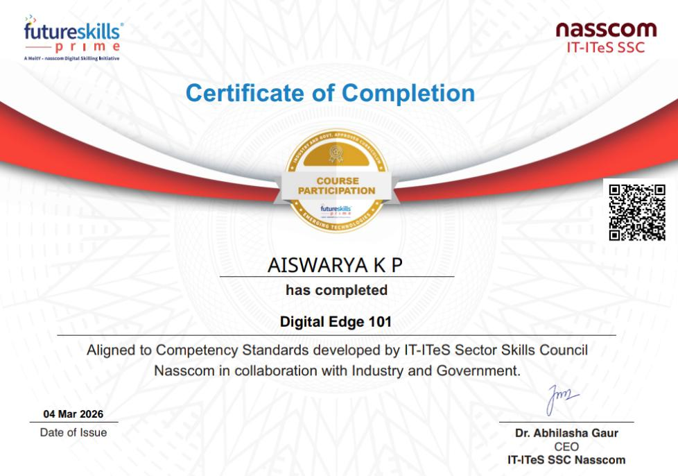
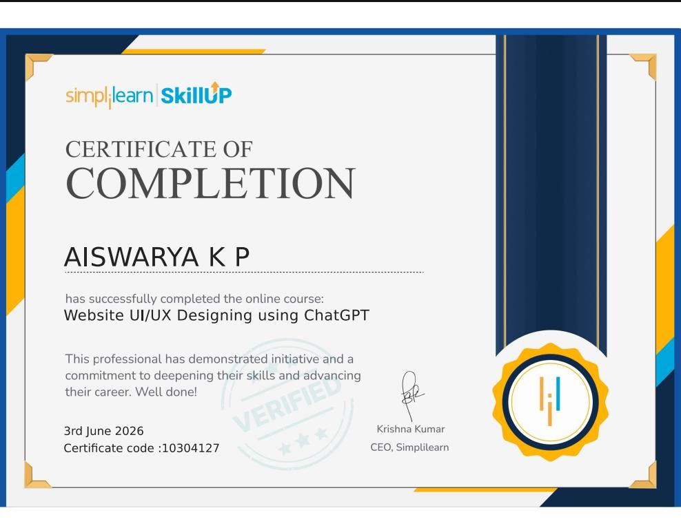
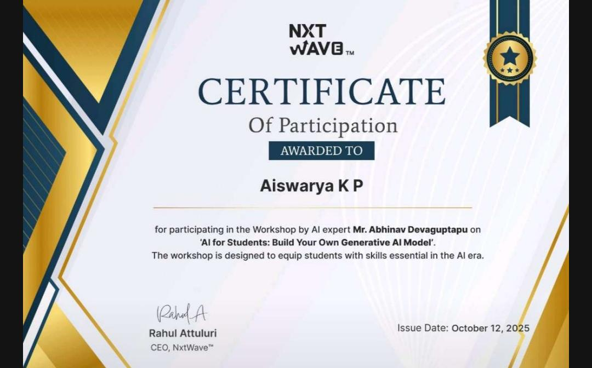
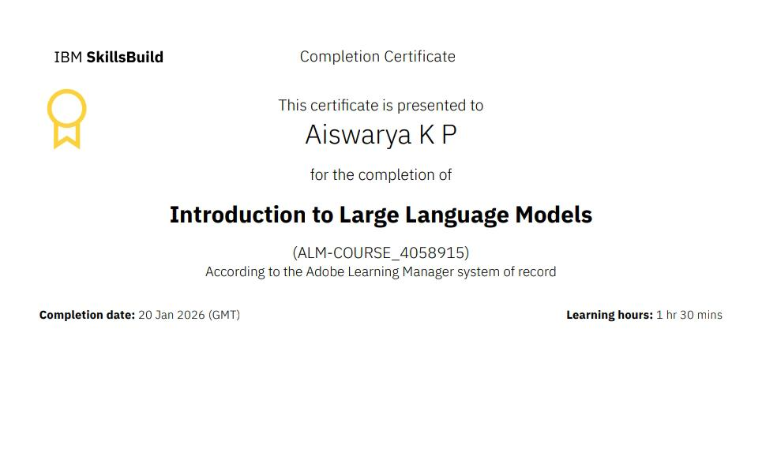

B.Tech CSE Student
Aspiring Software Developer • Lifelong Learner
Passionate about technology, innovation, and continuous learning. I aspire to build impactful software solutions that improve lives and contribute positively to society. I enjoy exploring new technologies, developing creative ideas, and constantly challenging myself to grow both personally and professionally.
SSLC Full A+
Higher Secondary
B.Tech CSE

I am Aiswarya K P, currently pursuing my B.Tech in Computer Science and Engineering (2nd Year) at TOCH Institute of Science and Technology.
I have a strong passion for technology, software development, and creating meaningful digital experiences. I enjoy learning new programming languages and exploring innovative ideas that can solve real-world problems.
I completed my SSLC with Full A+ in 2023 and secured 94% in Higher Secondary Education in 2025. These academic achievements reflect my dedication, consistency, and commitment to excellence.
Beyond academics, I actively engage in Karate, Yoga, and Dance, which have strengthened my discipline, confidence, creativity, and ability to maintain balance in life.
My long-term goal is to become a skilled software engineer capable of developing innovative solutions that positively impact society while continuously growing as a professional.
C, C++, Python, SQL
HTML, CSS, Responsive Web Design
Flutter (Beginner), Dart
Generative AI, Large Language Models (LLMs)
User Experience Principles and Interface Design Basics
Cybersecurity Awareness and Digital Safety Practices
Communication, Teamwork, Leadership, Adaptability
Problem Solving, Creativity, Time Management and Continuous Learning
Designed and developed a responsive personal portfolio using HTML and CSS to showcase my academic achievements, skills, extracurricular activities, and projects.
HTML • CSS • Responsive DesignCurrently learning Flutter and Dart with the goal of building practical mobile applications that address everyday challenges and enhance user experiences.
Flutter • DartProfessional development and continuous learning achievements.

RIT Kottayam – Hands-on training in Python programming fundamentals.

Developed knowledge of cybersecurity practices and online safety.

Enhanced digital literacy and professional readiness skills.

Explored user interface design principles and user experience strategies.

NextWave AI for Students – Explored Generative AI concepts and practical applications.

IBM SkillsBuild – Learned the fundamentals of Large Language Models and Artificial Intelligence.
Karate has taught me discipline, perseverance, confidence, and the importance of continuous self-improvement.
Yoga has enhanced my concentration, emotional balance, mindfulness, and overall well-being.
Dance enables creative expression while fostering confidence, teamwork, and enthusiasm.
Successfully completed SSLC with Full A+ in all subjects.
Completed Higher Secondary Education with an outstanding score of 94%.
Currently pursuing Second Year at TOCH Institute of Science and Technology.